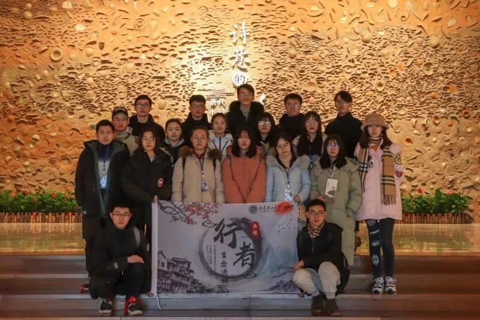
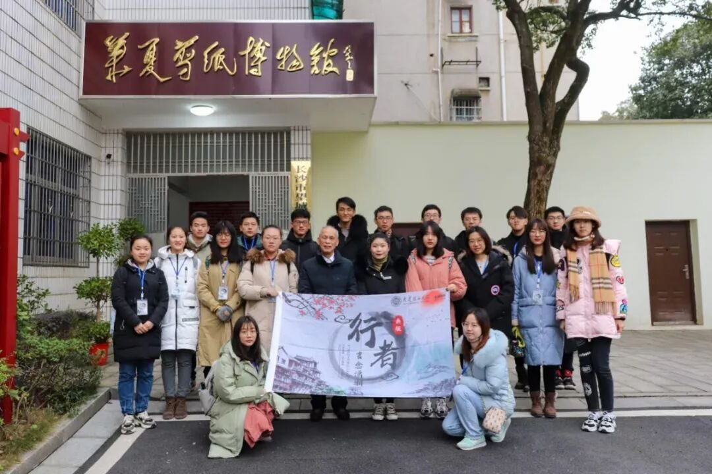
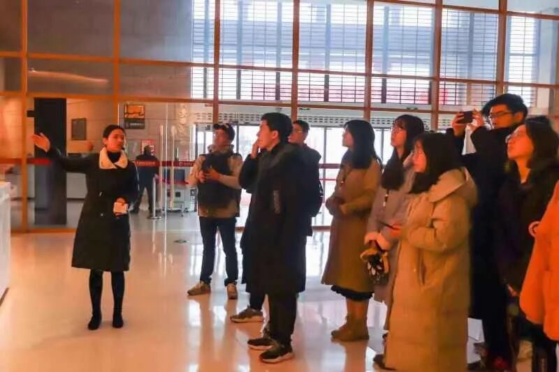
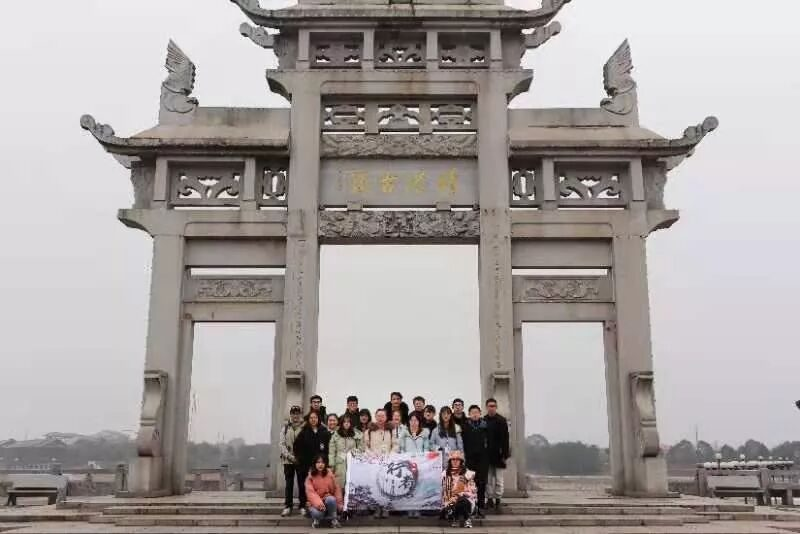

【行者无疆 言念潇湘】铜窑瓷韵遗靖港 金丝剪彩秀望城

铜窑瓷韵遗靖港
金丝剪彩秀望城
每一张剪纸
都是一个传奇的故事
每一件瓷器
都是一段历史的记忆
每一条古巷
都是一声斑驳的叹息
想把珍藏在街头巷尾的文脉
向你娓娓道来
镂金作胜,剪彩为人
“在寂寞里，守一颗初心
在喧嚣里，守一场凝望”
远方无穷，历史无涯。唯有非物质文化遗产，能穿透时间和空间的长河，在手口相传间记录人类文明的延续。于湖南而言，经典非物质文化遗产，俯拾皆是。拾起其中厚重的文化力量，就是从中传承前人的智慧与传统文化的血脉。丰富多彩的民间剪纸，是中华文化的重要组成部分。它不仅是一种简单的民间技艺，更是人们对于生活的艺术理解。


“我在与时间赛跑，我已经81岁了，但是我还想在有限的时间里，为剪纸再做一些事情。”这是该博物馆馆主——秦石蛟老先生在采访时所说的话。即使老先生已步入耄耋之年，但他仍然精神矍铄，一谈起剪纸便如痴如醉。对于商业化给剪纸带来的冲击力，对于民众对剪纸艺术以及民间艺术的误解，老先生有着诸多无奈，他能做的，就是在有生之年不遗余力地将这门艺术传承下去，把大半辈子的研究心得写成书，通过讲座、传习传授给更多人，还有这间剪纸博物馆。


一张方形的红纸，一把普通的剪刀，没有草图，没有模板，短短几分钟的时间，随着剪刀的翻转、游走，一只傲然的雄鸡就在老先生的手中诞生了。不似国画气韵生动，不比湘绣的质感强烈，剪纸有它独特的魅力。剪纸艺术的美，无言而张扬。安静而绚烂地绽放，没有只言片语，但只要你驻足，就能听到它多彩的故事。
沿江往北溯寻常，湘渚亭前读玉章
春火烧山成异彩，水耕浸草盛山乡
潭州故事窑中取，小镇风云釉下藏
几句难全修史笔，谈今说古两彷徨

千年瓷彩，盛世归来
长沙窑历经千年的沉淀，融合南北瓷艺，创出别具一格的饰瓷风格。将花鸟山水绘饰于瓷，将诗文警句书写于瓷，成为长沙窑特有的标签。“君生我未生，我生君已老。君恨我生迟，我恨君生早。”这首铜官窑瓷器上的唐代题诗，让生冷的瓷器多了一份浪漫的文化底蕴。跨越千年的窑火，依旧在熊熊燃烧。
“我们的先辈扬帆起航，穿越惊涛骇浪，闯荡出连接东西方的海上丝绸之路。“
千年海丝路，缘起长沙窑。
沩水之湄，千年靖港



碧浪翻腾
湘水逶迤穿境北去
魁星拱月
东南环抱古城长沙
叹望城之灵秀，历千古而弥新
感人文之深厚，赏逸景而无涯

来源 | 行者无疆实践团
图片 | 陈辉 米鑫
文字 | 黄玲
排版 | 张清雅
审核 | 段智然 康艳虎
行者无疆实践团
QQ：2758025831

随行者一起认识世界
长按二维码